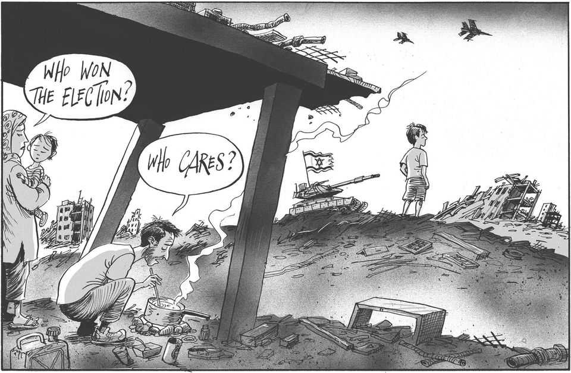

The world this week
Cartoon: Israel’s election
A lighter take on the news

Oct 29th 2026
Dig deeper into the subject of this week’s cartoon:
Binyamin Netanyahu has not won, but nor has he lost
Israel’s Jewish and Arab opposition parties should work together
You can see previous ones here.